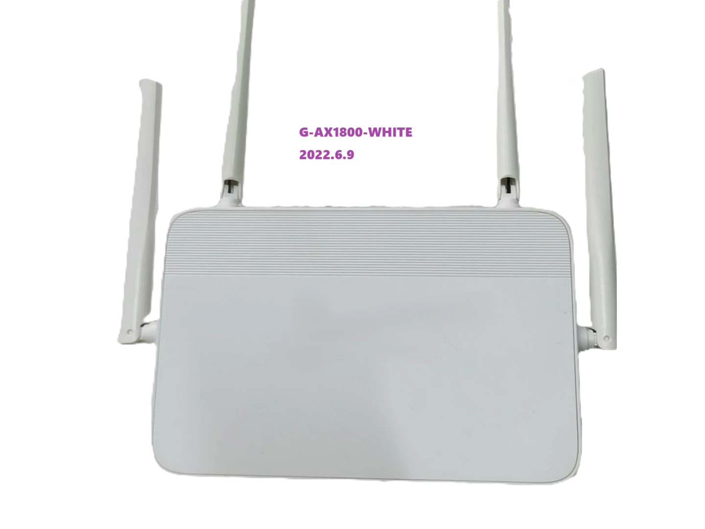
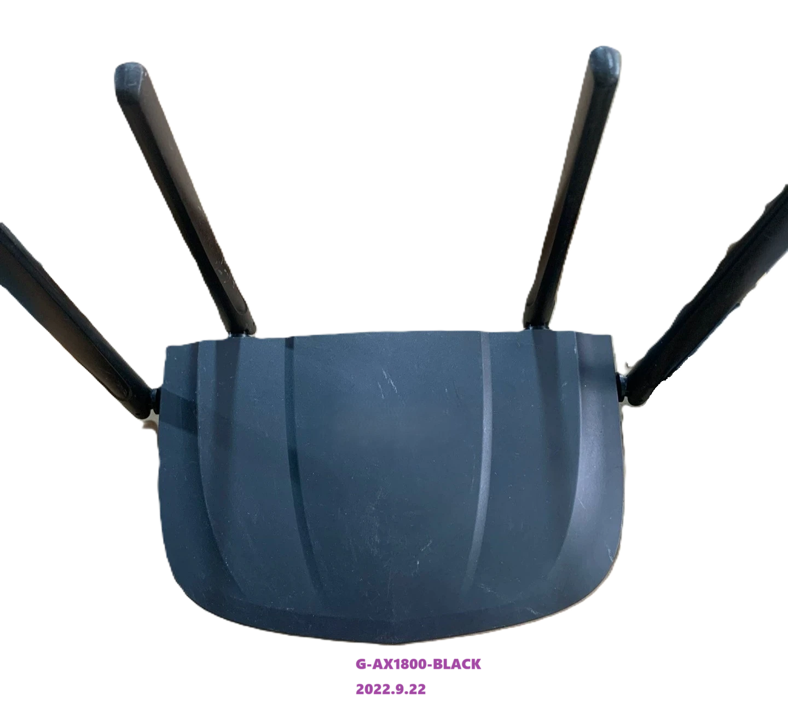
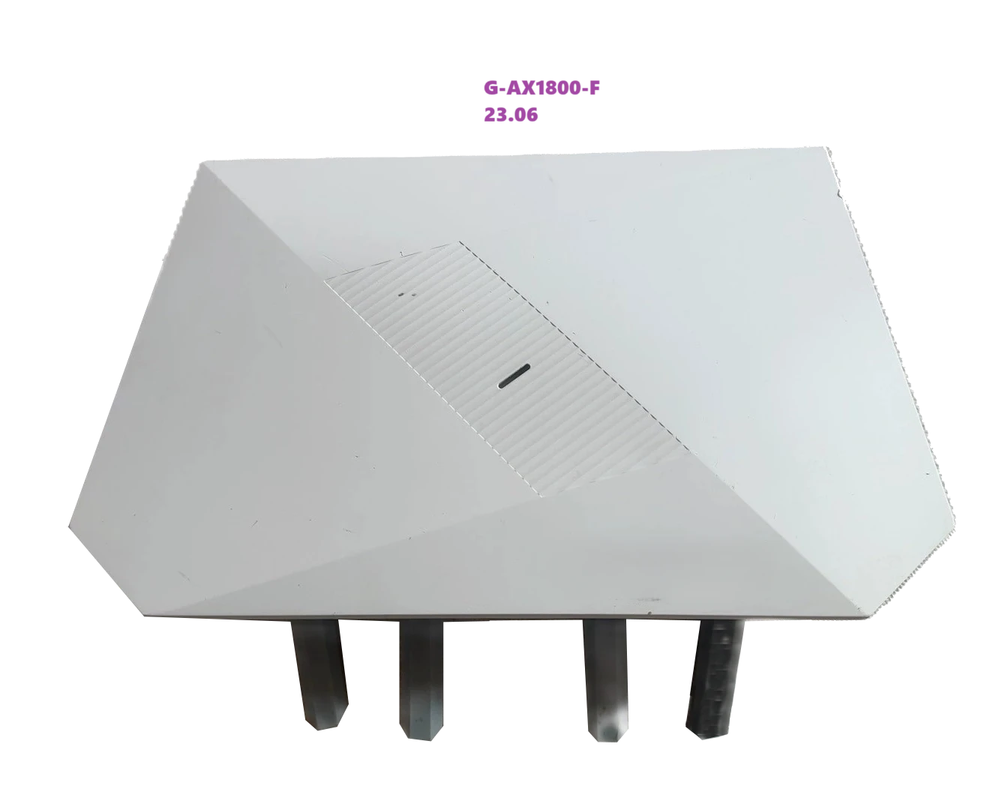

G-AX1800
1xx86运营商的路由器，G-AX1800，方案是MT76211AT+MT7905DAN+MT7975DN
这个玩意有好几个版本，应该是有几个代工，配置差不多，但是方案混乱，名字都叫G-AX1800，还有一个带F的版本，也是差不多的，原版固件是 LEDE 17.01-SNAPSHOT 定制版本。
版本以及硬件信息
CPU: MT7621AT@880MHz
RAM: DDR3 256MB@1200MHz
NAND: 128MB
Wi-Fi: MT7905DAN + MT7975DN
Ethernet: 1xWAN + 3xLAN (1G)
其他信息：BUS:220MHz, XTAL: 40MHz



G-AX1800-WHITE
G-AX1800-BLACK
G-AX1800-F
| 机构 | G-AX1800 | G-AX1800-F |
|---|---|---|
| Flash | NAND | NAND-NMBM |
| 网口顺序 | WLLL | LLLW |
| RESET | 18 | 7 |
| WPS/LINK | 6 | 6 |
貌似带F的两个版本使用了同一个CMIT ID,但是方案有所不同，据说某一个版本使用了RTL8198D（软件版本2.0）
可以确定，G-AX1800-F-23这个是浪潮代工的，有一款浪潮AP6113和这玩意一模一样。
关于刷机
MT7621的路由器，刷机还是比较简单的
可以使用 CR660X 的 PB-BOOT，论坛里也有人专门适配了一些固件。也能刷 集客ap246nd 或者 simax1800t
也可以使用 breed(xiaomi-r3g)，这个可以改 mac。
或者自己定制 u-boot。
开 SSH
TTL 连接
上电
不停按 Link 键，直到 ttl 输出停止
输入标签上的账号和密码
编辑
/etc/config/dropbear文件启动 ssh 服务
1
2/etc/init.d/dropbear enable
/etc/init.d/dropbear start
TTL 刷机
准备文件
putty.exe
hfs.exe
pb-boot.img
拆机，TTL 连接 RX TX GND
电脑插入 ttl 板子，查看 COM 口，打开 putty，设置好 COM 口和波特率：115200，此时不需要Open
用网线连接电脑网口和路由器的任意 LAN 口，组成最小局域网，电脑不用连接外网，全程有线局域网操作
机器上电，点击 putty 的 Open 按钮，可以看到有跑码了
跑一会，会提示按 f 进入 lede 的安全模式，按【1】【2】【3】【4】登录定制固件
按数字键 1，会出现提示输入用户名，输入路由器背后登录名：admin，然后会提示输入密码，快速输入机器背后的登录密码，即可进入定制固件的命令行
此时可以看下电脑的网络连接，应该是拿到了 192.168.10.x 的 IP
打开 hfs.exe 文件，把mtd-rw.ko和pb-boot.img添加到 hfs 中
此时在 putty 窗口的定制固件的命令行中输入: cd /tmp，切换到 tmp 目录
命令行中继续输入: wget http://192.168.10.x/mtd-rw.ko (x表示路由器给电脑分配的IP，我这里是2，即192.168.10.2) ，提示文件已下载到tmp目录下
命令行中继续输入: wget http://192.168.10.x/pb-boot.img (x表示路由器给电脑分配的IP，我这里是2，即192.168.10.2)，提示文件已下载到tmp目录下
命令行中继续输入: insmod /tmp/mtd-rw.ko i_want_a_brick=1，提示 setting writeable flag
命令行中继续输入: mtd unlock Bootloader，提示 Unlocking… Bootloader，已成功解锁 Bootloader 分区，快成功了，继续
命令行中继续输入: mtd write pb-boot.img Bootloader，提示 Writing from pb-boot to Bootloader …，pb-boot 成功写入 Bootloader 分区
路由器断电、上电重启，从 putty 的窗口中已可以看到 boot 已经是 PandoraBox-Boot，接下来就可以刷机了
F 版本免拆
导出配置，解密、修改，最后导入。
/etc/config/system
1 | option telnet '1' |
加密算法：openssl des3
固件
富春江G-AX1800 Padavan4.4 纯净彩虹主题版
富春江G-AX1800 黑色版本 Padavan 4.4 彩虹主题
padavan-4.4_vb1980
富春江G-AX1800和海尔HAR-20S2U1云编译padavan固件
padavan-4.4_ddyjyj
【20240824】SIM AX18T/Hair HAR-20S2U1/JCG Q20/富春江G-AX1800白黑/360 T6M AsusModx
asuswrt-modx-next
备份固件
未完待续…
思路：mtd backup，dd if 备份，tftp/scp/httpd/nc/python 传回电脑
PC
1 | nc -l -p 12345 > backup.img |
1 | cat /proc/mtd |
下载 python 的二进制
https://mirrors.ustc.edu.cn/openwrt/releases/17.01.1/packages/mipsel_24kc/packages/
提取 DTS
未完待续…
思路：备份 kernel 分区，然后使用 extract-dtb 提取 dtb，dtc 反编译成 dts
参考
g-ax1800-b.dts
定制 U-Boot
一种在线定制 MT7621 u-boot 的方法
uboot-mt7621
定制 OpenWrt
未完待续…
思路：找一个相似机型，查看适配代码提交记录，依葫芦画瓢。
参考
Commit f7f9203
Commit 6361a95
定制 Asuswrt
参考
Commit 8693440
定制 Padavan
参考
Commit 4499bd2
参考资料
富春江 G-AX1800 & G-AX1800-F 差别
友华WR1200JS刷入breed教程
富春江G-AX1800拆机TTL刷PB-BOOT教程
富春江ttl刷机
第二台富春江路由器G-AX1800故事续，刷机成功，拆机新刷法